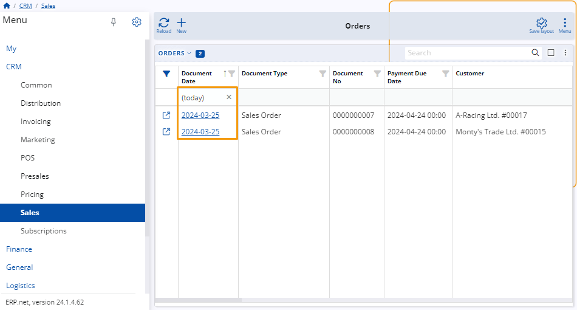
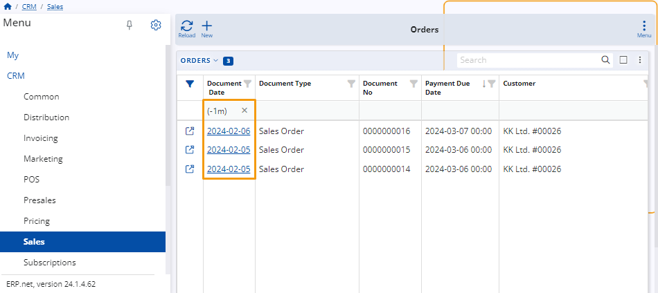
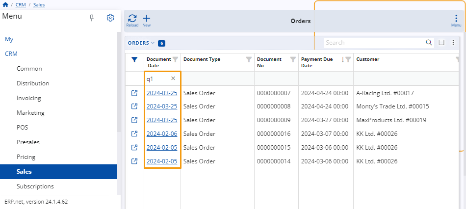
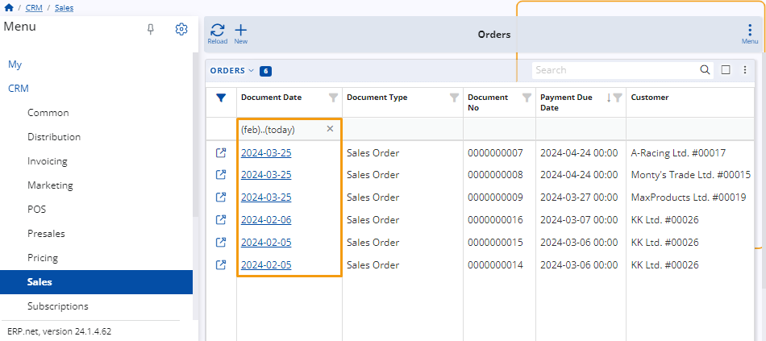

Web Client navigator – filtering expressions
In the ERP Web Client platform, filtering expressions within the data filters of navigators allow you to access various time periods as needed.
How to use filtering expressions
To use a filtering expression, start by accessing a navigator such as Orders within Sales. If the filter row is not currently visible, you can make it appear by accessing the navigators menu and selecting Show filter row from the dropdown options.

In the filter row of a column containing data, you can input filtering expressions. For instance, you may input (today) in the document date column. By doing so, only items created today will be displayed on the table.

Rules for using filtering expressions
The expressions have constraints, and their syntax can impact their functionality. It's crucial to ensure their proper formulation to achieve desired results.
Relative time expressions
These expressions refer to time periods relative to the current moment, rather than specifying exact dates. Examples include (yesterday) or (last month). These expressions, enclosed within brackets, are used to define time periods relative to the current date without specifying specific dates.

Relative date expressions
These expressions refer to specific dates relative to the current date. For example, "-7d" denotes a date seven days before the current date, while "+2d" represents a date two days ahead of the current date. These expressions, written without brackets, are used to specify exact points in time relative to the present moment.

Relative period expressions
These expressions refer to specific periods relative to the current date. For example, (-1m) denotes the month that was before the current month, while (+2m) represents the month that is ahead of the current month. Enclosed within brackets, these expressions are used to specify time periods relative to the present moment.

Expressions for large relative time periods
These expressions establish time periods relative to specific intervals or divisions within a broader timeframe. For example, "q1," "q2," and "h1" mark these periods. "q1" signifies the first quarter of the year, "q2" represents the second quarter, and "h1" denotes the first half of the year.

Assign custom time periods
Custom time periods can be designated, for instance, (feb)..(today) representing the timeframe spanning from month February up to and including today. (yesterday) specifically denotes yesterday's date. Additionally, (yesterday)..+2d extends from yesterday to two days ahead, ensuring a comprehensive scope within your data analysis.

Note
- Zero without brackets represents today as both the beginning and end of the period.
- If no dimension is specified, the default dimension is days: "-7" is equivalent to "-7d" and "0" represents today.
- When specifying a period in days, it can be written with or without brackets.
Note
The screenshots taken for this article are from v24 of the platform.